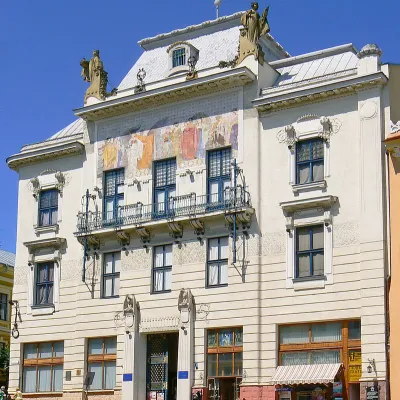
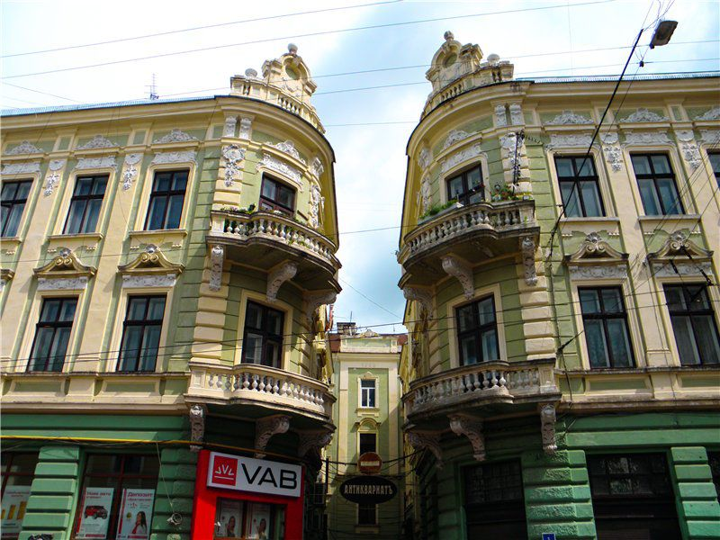
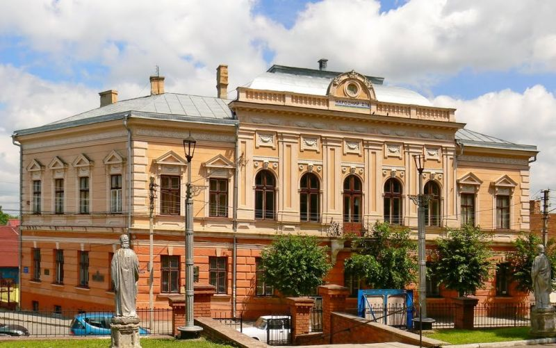

Чернівці – цікаве та досить загадкове місто зі своєю душею та історією.
Проживаючи тут, Ви можете навіть не здогадуватися про всі таємниці, секрети та цікаві факти про нього.
Чого Ви могли не знати про Чернівці та які цікаві факти про місто варто дізнатися.
Його називають «Перлина Буковини» або «Маленький Париж», і недаремно.
Колоритне місто, що ввібрало в себе дещо і від Османської імперії, і від Австро-Угорщини, і від Румунії…
Величний університет, романтичний центр, захоплива архітектура та чимало варіантів відпочинку – це тільки частина того, чим захоплює це місто.
Резиденція митрополитів Буковини та Далмації
Резиденція митрополитів Буковини і Далмації – це не лише архітектурна перлина, але й культурний та історичний символ, що відображає багатий спадок регіону.
Архітектурний ансамбль колишньої резиденції православних митрополитів Буковини і Далмації був побудований на місці старого архієрейського будинку в період 1864 – 1882 років. Зараз у ньому знаходиться Чернівецький національний університет імені Юрія Федьковича. Цей унікальний архітектурний ансамбль був побудований завдяки зусиллям єпископа Євгена (Гакмана). У 1863 році він отримав дозвіл від австрійського імператора на будівництво нової просторої резиденції, гідної столиці Буковини. У наступному році, відразу після освячення собору Святого Духа, єпископ Хакман приступив до будівництва майбутньої резиденції.
Проект архітектурного ансамблю виконав чеський архітектор, академік Йозеф Главка. Він спроектував нетрадиційний комплекс будівель в еклектичному дусі з переважанням елементів візантійського і романського стилів.
Цей проект неодноразово завойовував нагороди на відомих архітектурних конкурсах і був відзначений на Всесвітній виставці в Парижі. Склад ансамблю досить складний, але в той же час є чітке планування. Він складається з трьох монументальних споруд: головної; духовна семінарія, спільно з церквою Трьох Святителів; і пресвітерій.
У головному корпусі (в якому зараз розміщуються ректорат і факультет іноземних мов) знаходиться митрополичий монастир з просторими апартаментами, в яких він працював і відпочивав, і розкішними залами, в яких він влаштовував аудієнції для поважних гостей і де проводилися єпархіальні збори. У кутку лівого крила будівлі знаходиться домашня церква єпископа - каплиця Івана Сучавського, з якої почалося будівництво всієї резиденції.Серед приміщень головного корпусу вражає Синодальний зал. Він був прикрашений мармуром (звідси і його сучасна назва – мармур) і обставлений бічними галереями колон, на яких спиралася дерев'яна стеля, прикрашена орнаментами. Враження посилювали коридори з мармуровою мозаїкою на підлозі та розписані стелі у вигляді куполів. У 1944 році Синодальний зал постраждав від пожежі. Вогонь пошкодив не лише інтер'єр, а й синодальну бібліотеку, в якій зберігаються унікальні друковані книги та архіви. Нинішній вигляд Мармурової зали є копією, створеною реставраторами.
Однак вогонь не зачепив зал засідань Священного Синоду (сьогодні Червона зала). Його інтер'єр зберігся в первозданному вигляді. Його стіни прикрашені китайським шовком, дерев'яна стеля прикрашена орнаментами, а підлога застелена паркетом з червоного бука, дубах і зеленої липи. На одній зі стін висять величезні венеціанські дзеркала. Створені за старовинною технологією, вони мають п'ять шарів срібла.
З лівого боку від входу до резиденції в нинішньому VI корпусі університету розташовувалися два духовні навчальні заклади. Однією з них була духовна семінарія, створена в Чернівцях у 1828 році, яка займала другий поверх будівлі, а перший поверх, з ініціативи митрополита, передали для потреб грецького православного богословського факультету тоді ще відкритого Чернівецького університету.
Підковоподібний корпус семінарії з трьох сторін оточує церкву Трьох Святителів. Будівництво храму було розпочато єпископом Євгеном Гакманом у квітні 1867 року. Костел розписав художник-професор з Відня Карл Йобст. Фрески з біблійними сюжетами належать йому.
У 1993 році, після часів радянського атеїзму, у складі філософсько-богословського факультету Чернівецького університету було відновлено богословський факультет, який розташовувався на першому поверсі будівлі семінарії, а богослужіння були відновлені в храмі Трьох Святителів.
У будівлі, розташованій праворуч від головного входу (нині IV корпус університету, де розташований географічний факультет), знаходилися дияконська школа, музей архієпископа та свічковий завод. Дах історичної будівлі пресвітерію, як і всієї резиденції, вкритий орнаментованою черепицею, що нагадує народні мотиви з Буковини. Посередині будівлі над головним входом розташована вежа з годинником і купол, який прикрашений по колу зірками Давида. Таким чином було увічнено пам'ять про фінансову допомогу, яку єврейська громада міста надала Буковинському православному митрополиту. Сума, необхідна для будівництва резиденції – 1,8 мільйона гульденів, самі православні зібрати не могли.
Резиденція митрополитів Буковини і Далмації – це місце, що поєднує в собі духовність, історію та архітектурну велич. Вона є невід’ємною частиною культурного спадку України та заслуговує на увагу кожного, хто цікавиться історією та архітектурою.
Театральна площа
Оцінивши красу колишньої резиденції, можна сміливо рухатися далі. Одним із улюблених місць відпочинку жителів і гостей Чернівців, безумовно, є Театральна площа. Одна з найстаріших площ міста вабить великою кількістю зелених насаджень, гармонійно спроектованим архітектурним ансамблем будівель довкола. Розкішні споруди Театральної площі, зведені в минулому сторіччі, вражають своєю величністю і, в той же час, витонченістю. Сьогодні Театральна площа – місце відпочинку та естетичного задоволення, а ще два століття тому тут шумів густий ліс. 1800 року Чернівецька міська управа навіть видала спеціальний циркуляр про організацію облави на вовків, котрі у ньому мешкали. У 19 столітті – це вже площа Єлизавети, на якій дислокувалися військові склади з провіантом. Згодом тут розмістився базар, де торгували рибою, через що площу називали в народі Рибною або Фішпляц. Однак незабаром майдан почали забудовувати багатоповерховими кам'яницями.
У 1904–1905 роках на площі звели новий міський театр. Саме з цього часу містечково-базарний пляц перетворюється на стильний та імпозантний європейський майдан. Театральна площа у Чернівцях – не просто місце для прогулянок чи відпочинку на лавиці. Це ще й осередок старовинних будівель, пам'яток архітектури, які з'являлися одна за одною разом із поступовим розвитком міста та технологій. Тут можна побачити як зовсім давні споруди, так і витвори сучасності:
Головна перлина в архітектурному ансамблі площі, звичайно ж, музично-драматичний театр імені Ольги Кобилянської. Побудований на початку минулого століття за проектом двох геніїв, що зводили легендарні театри Одеси та Відня, він заворожує багатством декору свого фасаду. Над входом розміщена скульптурна композиція, що являє собою сцену з давньогрецької трагедії «Едіп-цар». Перед будівлею на постаменті встановлено витончену скульптуру письменниці Ольги Кобилянської, на честь якої і названо театр. Німецький письменник Георг Гайнцен відзначав: «Чернівецький театр – то пам'ятник обізнаним з культурою чернівчанам, які понад усе боялись набути репутації провінції і палко прагнули ні в чому не поступатися шановному метрополю Відню».
.jpg)
Трохи віддалік театру розташована ошатна будівля колишнього Єврейського народного дому, зведена в стилі еклектики за проектом львівського архітектора Тадеуша Левандовського. Споруджений 1908 року, дім був центром єврейського культурного й громадського життя у місті та на Буковині. Є пам'яткою архітектури місцевого значення.
Приміщення Румунського народного дому, що використовували в радянський час як Будинок офіцерів, дивує тим, що його правий бік набагато довше лівого – так задумали автори.
З іншого боку площі розташований монументальний будинок торговельно-промислової палати, споруджений в стилі модерн. Зараз тут адміністративний корпус Буковинського державного медичного університету.
Усі грандіозні споруди були зведені в 20 столітті. А ось 2000 року на площі з`явилася Алея зірок, де увічнені імена відомих діячів культури й мистецтва, які почали свій шлях у Чернівцях. Тут "запалені" світила Назарія Яремчука, Софії Ротару, Володимира Івасюка, Іво Бобула, Степана Галябарди, Миколи Мозгового. Всього 44 зірки. До речі, Чернівці ще називають і пісенною столицею України.
Неоготичний костел Найсвятішого серця Ісуса
Один із найстаріших храмів у Чернівцях – костел Найсвятішого серця Ісуса – розташований на колишній площі Фердинанта. Вежа цього храму здійнялась на 60 метрів до неба. Споруда має особливості готичної архітектури: масивні контрфорси, а їх 15, підтримують основу будівлі та великі стрілчасті вікна (колись були заповнені вражаючими чеськими вітражами). Цей костел називають єзуїтським, проте зараз це - Римсько-католицький костел Найсвятішого Серця Ісуса.
Автором проекту храму і сусіднього монастиря (кляштора) був найвідоміший зодчий Чернівців, директор промислової школи Йозеф Ляйцнер. У червні 1891 року було закладено наріжний камінь під майбутній храм. А вже через три роки, восени 1894-го, його освятили. Богослужіння тут правили трьома мовами: польською, українською та німецькою. З Еденбурґа (Німеччина) привезли три дзвони. Найбільший, що важив 20 центнерів, називався "Серце Господа Ісуса". У храмі було встановлено орган, який наповнював неймовірно оздоблені стіни нотами музики.
Храм був діючим в перші роки радянської влади. Про те згодом його спіткала гірка доля. Костел закрили, знищили унікальний орган та нижні вітражі, церковне начиння розікрали, зникли дзвони, а саму будівлю всередині перебудували - розділили на три поверхи залізобетонним перекриттями. З 1960-го року у святині розмістили обласний державний архів.
Лише у 2010 році архів з храму вивезли, а костел повернули релігійній громаді Римсько-Католицької церкви. Впродовж останніх 10 років віряни намагаються відродити святиню. Бо ж і дотепер костел Найсвятішого серця Ісуса – одна з найпрекрасніших споруд Чернівців. Окрім єдиної служби Божої, у храмі також проводять поетичні читання, музичні вечори й зустрічі з цікавими непересічними людьми. А у підвалах костелу відкрили крипту, в якій поховані 60 польських жовнірів часів Першої Світової війни.
Ця споруда – не лише архітектурний шедевр, а й місце, де переплітаються історія та віра.
Будинок-корабель
Десь наприкінці XIX ст. на колишній площі Святого Хреста виросла одна з примітних архітектурних споруд старого міста – «будинок-корабель», який старожили ще називали «шіфою». Будівля своїм виглядом справді нагадує корабель, що немовби пливе серед вулиць Чернівців. Оригінальне архітектурне вирішення будинку сприяло народженню романтичної міської легенди, яку переповідає з уст в уста вже не одне покоління городян. Буцімто жили колись два брати: один був підприємцем у Чернівцях, а другий – капітаном, що ходив далекими морями. І коли той моряк вийшов у відставку, сухопутний брат покликав його назад до рідного міста. Брати придбали ділянку в центрі міста й звели добротний будинок. Та позаяк капітан тужив за морем, то будинок спорудили подібним до корабля: зі звуженим фасадом, що, наче форштевень, розтинає потоки доріг, відкритим майданчиком на другому поверсі, який нагадує палубу, й башточкою у вигляді щогли. Носова частина «шіфи» була прикрашена невеличким фонтаном у формі голови лева і чашею-раковиною, з якого городяни пили воду.
Центральна площа
Головною площею Чернівців є Центральна. Все політичне життя в основному відбувалося тут, бо саме на цій площі розмістилася ратуша. Для кожного міста в давнину ратуша мала особливе значення, її поява знаменувала набуття магдебурзького права – права на самоврядування. Цю пам'ятку важко не побачити у Чернівцях, адже вона знаходиться у самісінькому серці міста.
Ідея спорудження у Чернівцях міської ратуші виникла у 1820-х роках. Побудована була у 1843–1847 роках за проектом німецького архітектора Адольфа Мартіна, який переконував міську владу в необхідності зведення ратуші на головній площі Чернівців. Ратуша була зведена на досить ґрунтовному фундаменті, глибина якого становила близько шести метрів, і спочатку використовувалася як пожежна каланча. За час свого довгого існування ратуша у Чернівцях бачила і австрійських правителів, і російських чиновників, і румунських окупантів. На сьогодні будівля продовжує використовуватися за призначенням. Зараз у ній розміщується резиденція міського голови та Чернівецька міська рада.
В архітектурі будівлі простежуються риси, пов'язані з відходом від принципів класицизму та переходом до італійського ренесансу: фасад вирішено у класичному стилі, тоді як у вежі проглядаються ренесансні мотиви. У початковому проекті планувалося будівництво двоповерхової вежі, але надалі було прийнято рішення звести ще один додатковий поверх. Відмінною особливістю ратуші є двоє годинників. Один з них – баштовий, встановлений у процесі будівництва. А другий, розміщений над парадним входом, був пізніше подарований міським головою Антоном Кохановським, який очолював Чернівці з 1866 по 1892. Цей годинник з циферблатом, що світиться уночі, він замовив у Празі і презентував улюбленому місту. Зараз на шпилі вежі розвивається жовто-блакитний український прапор, а фасад прикрашає герб міста. Імпозантний будинок дуже гармонійно вписався в архітектурний ансамбль, зробивши центральну частину міста найпрекраснішим місцем.
Протягом багатьох десятиліть за порядком у місті стежили пожежні з високої вежі. Як тільки десь розгоралася пожежа, вивішували прапор червоного кольору, а у темний час доби запалювали світло з того боку, де траплялося нещастя. Побачивши такий знак, місцеві жителі розуміли, де необхідна їхня допомога.
Щодня опівдні на вежі чернівецької Ратуші сурмач у народному гуцульському костюмі на всі чотири сторони світу грає уривок з мелодійної пісні «Марічка». Ця славна чернівецька традиція була започаткована у 2004 році. З тих пір сурмач кожного дня долає 126 сходинок на вежу ратуші. Він стає там, де раніше працівники магістрату інформували громадян про події у світі трьома мовами, і розпочинає церемонію. Кожного дня, незалежно від погоди, сурмач грає «Марічку» і повідомляє чернівчанам та гостям міста, що настав полудень.
Площа Пресвятої Марії (Турецької криниці)
Площа Пресвятої Марії зі старовинним шармом та сучасними архітектурними творіннями - одна з найбільш відвідуваних серед чернівчан і гостей міста. Раніше площа мала назву «Турецька», адже тут знаходиться найдавніше водне джерело Чернівців – легендарна «турецька криниця». Спорудження на майдані цього кам’яного резервуару стало нагадуванням про панування Османської імперії на Буковині. Наприкінці 18 століття криницю капітально відремонтували. Неподалік був розташований пост жандарма, який стежив, щоб воду брали лише для пиття. З цим джерелом пов’язують романтичну легенду про кохання турецького паші до простої української дівчини. За переказами, одного разу коло криниці паша зустрів дівчину, що набирала воду, та закохався в неї до нестями. Він навіть пропонував їй стати однією з його дружин, проте горда дівчина відмовила йому. Після цього турок заборонив людям набирати з криниці воду. Наступного ж дня дівчина прийшла до джерела, подивилась на пашу і кинулась у криницю.
Після відходу османів з тутешніх земель "турецький" колодязь досить довго використовували православні християни під час святкування Водохреща. Адже неподалік від джерела упродовж кількох століть був розміщений православний храм Успіння Марії. Церква простояла на площі майже століття, опісля її перенесли на Калічанку – передмістя Чернівців. А ще з «турецької криниці» брали воду іудеї, використовуючи її для мікви - ритуального басейну, який також тут знаходився. Таким чином, на Турецькій площі були розташовані святині трьох народів.
У радянський період і криниця, і площа, і навколишні будівлі занепали. Площу було повністю реконструйовано у 2008-му - до 600-річчя Чернівців. Відновлювала колодязь турецька будівельна компанія, яка спорудила над ним красиву ажурну альтанку, виконану в східному стилі. Неподалік розмістилася кругла аркада з фонтаном. Площу прикрасили оригінальним квітковим годинником, а за рік тут з’явився залізний кований велосипед. До пагорба з квітковим годинником тепер ведуть кам'яні сходи, які освітлюють безліч ліхтарів. Ними можна піднятися на другий рівень площі, а саме на Турецький міст, який завжди надихав митців та поетів.
Вулиця Ольги Кобилянської
Вулиця Ольги Кобилянської у Чернівцях є візитною карткою міста. Саме сюди поспішають всі туристи, які приїжджають у столицю Буковини. Це єдина пішохідна вулиця міста, транспорт заїжджає сюди вкрай рідко. Перші будівлі почали тут з'являтися в 40–50 роках минулого століття. Спочатку вулиця називалася Молодіївською, пізніше – Панською і Янку Флондора. Тут розташовувалися безліч незвичайних салонів, ресторани, кав'ярні, магазини, банки і багато іншого. Вулиця Кобилянської у Чернівцях знаменита тим, що, за легендою, її підмітали букетами троянд і не пускали відвідувачів у брудному взутті. Мешканці сіл, які привозили продукти на продаж, ретельно витирали черевики, щоб не забруднити дорогу. Щоранку двірники мили бруківку і тротуар милом.
Вулицю Ольги Кобилянської повністю відреставрували 2008 року, до 600-тої річниці Чернівців. Бруківку переклали, а тротуари замостили мармуровою плиткою, на бордюрах різними мовами написали назву міста. Будинки на головній вулиці є яскравими представниками різних архітектурних стилів Європи.
Тут функціонує краєзнавчий музей, де зберігається найбільша колекція пам'яток Буковини, серед яких археологічні матеріали, стародруки, зброя і безліч інших речей. Поруч, на розі вулиць Вірменської та Української, розташований зал органної та камерної музики, колишня вірменська церква – творіння архітектора Йозефа Главки.
Поблизу краєзнавчого музею можна побачити православний собор Святого Духа 19 століття.
До 600-ї річниці з дня заснування міста, неподалік від Палацу урочистих подій, встановили ковану карету – подарунок від чернівецьких ковалів.
Чернівецький художній музей
Якщо з Центральної площі повернути ліворуч на вулицю Івана Франка, а потім праворуч — на вулицю Емінеску, дійдете до Художнього музею. Цей музей є найбільшим закладом мистецтва у місті Чернівці. Туристичні місця на кшталт цього не можуть не привертати увагу.
Сама будівля прикрашена великим панно на міфологічну тематику, що зображує 12 богів як 12 найважливіших провінцій Австро-Угорщини. На вході є композиція вітражів та розписана стеля в стилі доби просвітництва. У самому ж музеї представлена велика кількість унікальних картин на релігійну тематику, перевезених із закритих церков.
Також тут єкерамічні вироби, скульптури, масляні полотна, оригінальне вбрання гуцулів та австрійців. Саме поєднання культур різних націй робить музей однією з найвидатніших культурних пам’яток міста Чернівці.
Брати-близнюки
Будинки-близнюки – архітектурна пам’ятка міста. Дві абсолютно однакових споруди виглядають як дзеркальне відображення одне одного. Виконана у стилі класицизму з елементами візантійського бароко і ренесансу будівля, без сумніву, привертає увагу.
За легендою, будинки-близнюки – принада міста Чернівці – були зведені горожанином, у якого були близнюки-сини. Ніби-то він збудував для них однакові будинки, а сам мешкав у центральній частині, щоб бути поряд. Насправді це – не дві однакові споруди, а одна, яка має П-подібну форму. Відстань між балконами "близнюків" настільки мала, що здається, ніби сусіди можуть приходити в гості прямо через лоджії.
Зараз будинки-близнюки є житловими. Перші поверхи займають різноманітні організації.
Український народний дім
Перед Першою світовою війною на Буковині з`являються активні тенденції відродження української мови та національної ідентичності буковинських русинів, які усвідомили своє ставлення до українського народу. Вперше ідея про заснування товариства «Народний дім» була озвучена в 1875 році на одному із засідань товариства «Руська Бесіда». Зареєстрували його лише через майже 10 років. Товариство отримало назву «Російський народний дім».
Після створення суспільства ключовим стало питання про створення власного дому для нього, тому в жовтні того ж року серед українців починається активний збір коштів на його будівництво. Завдяки величезній підтримці влади і українського народу будинок вдалося створити в рекордно короткі терміни.
У 1899 році на базі Українського дому починає працювати хлоп`яча бурса. Трохи пізніше австрійським імператором Францом Йосифом була проведена реконструкція приміщення. У період перед Першою світовою війною у Чернівцях практично усі українські громади розміщувалися в стінах Українського дому. За часів революції на його базі формується громадська український національний рух. Коли в 1918 році до влади прийшли румунські політики, вони заборонили діяльність Народного дому аж до 1920 року, саме в цьому році відбулися перші збори суспільства в післявоєнний час.
У 1940 році Український дім знову був закритий, але вже радянською владою. У 1944 році на базі будівлі Народного дому починає функціонувати клуб НКВС. За весь час свого існування тут працювали: Будинок вчителя, Будинок художньої самодіяльності, Правління обласної спілки письменників, Чернівецький обласний центр народної творчості.
Знову свою діяльність Український народний дім відновлює лише після здобуття Україною незалежності.
Центральний парк культури і відпочинку імені Тараса Шевченка

Центральний парк культури і відпочинку імені Тараса Шевченка в Чернівцях, заснований у 1830 році, є визнаним осередком відпочинку і культурного дозвілля. Розташований у самому серці міста, парк поєднує багатовікову історію з сучасними атракціями. Прогулянки серед історичних дерев та мальовничих алей дарують не тільки естетичну насолоду, а й відчуття причетності до багатої культурної спадщини Чернівців.
Парк Шевченка був створений завдяки зусиллям окружного інженера Адольфа Маріна та міського архітектора Андреаса Мікуліча. Вони перетворили природний лісовий масив на унікальний ландшафтний парк, висадивши понад 35 тисяч кущів та дерев, серед яких були рідкісні породи з Європи. Серед найцінніших дерев — канадська тсуга, тюльпанове дерево, плакучий бук, магнолія кобус та гінкго дволопатеве.
Парк Шевченка займає понад 16 гектарів і є домом для багатьох історичних пам'яток та архітектурних ансамблів. На його території розташовані скульптура "Серце кохання", фонтан, літній театр та атракціонний комплекс. Окрім того, парк відомий своїм ботанічним садом, де збереглися рідкісні рослини, висаджені ще у XIX столітті.
Центральний парк культури і відпочинку імені Тараса Шевченка — це справжня зелена перлина Чернівців, де поєднуються історія, природа та сучасні розваги. Незалежно від віку та інтересів, кожен відвідувач знайде тут щось особливе для себе. Парк не тільки зберігає культурну спадщину міста, але й дарує незабутні враження, заряджаючи енергією та натхненням.
Миколаївська церква
З усіх старовинних храмів Чернівців молдавсько-турецької доби на своєму первісному місці залишилася лише дерев'яна церква Святого Миколая, яка постала у 1607 р. на міській околиці при «дорозі на Горечу». Стиль Миколаївської церкви характеризується як «хатній» тип, притаманний Буковині тих часів.
За архітектурною композицією – це однорівнева споруда без купола, стіни якої складені з дубових брусів у зруб, а дах покритий дранкою та увінчаний трьома кованими хрестами. Спочатку поблизу церкви стояла дерев'яна дзвіниця на три дзвони, а в 1868 р. на її місці спорудили муровану дзвіницю, яка збереглася до наших днів.
Міські легенди називають церкву «козацькою». Буцімто тут у різні часи молилися великі гетьмани Петро Сагайдачний під час Хотинської війни 1621 р. та Іван Мазепа після Полтавської битви 1709 р., нібито в ній відспівували старшого сина Богдана Хмельницького.
Площа Філармонії
Площа Філармонії у Чернівцях, хоч невеличка, але дуже затишна. Містяни полюбляли це місце задовго до того, як воно стало туристичною локацією. Колись тут щодня відбувалась жвава торгівля, адже серед площі працював галасливий ринок.
Площа Філармонії змінила безліч імен за час свого існування. Здавалось, кожен новий власник Чернівців хотів внести свої нотки у звучання назви цього місця. У різні часи її називали площею Рудольфа, Дачії та Перемоги. В народі площу називали Мучною або Мельпляц через те, що тут продавали борошно.
До XIX ст. її використовували для господарських цілей. На площі розташовувались склади, цехи та казарми. Проте місто росло і вже у 60-х рр. ХІХ ст. вона опинилась у самісінькому центрі міста, яке розрослось. Господарські споруди знесли і перед очима містян вперше постала відпочинкова площа Рудольфа. У 2005 р. площу Філармонії у Чернівцях відреставрували, замінили плитку, встановили нові лавки та ліхтарі.
У 1877 р. серед двоповерхових будиночків, які зводили навколо площі, з’явилась скромна споруда Музичного товариства. Двоповерховий будинок з фігурним фронтоном та арковими проходами відмінно вписався в ансамбль існуючих споруд. Через сто років у цьому приміщенні відкриють місцеву філармонію, на честь якої й назвуть площу.